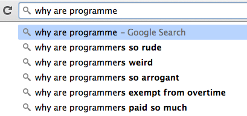
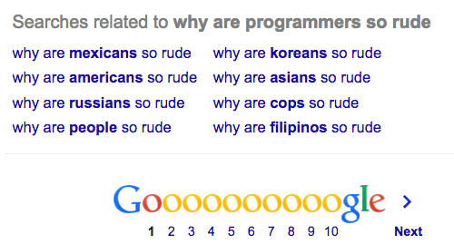
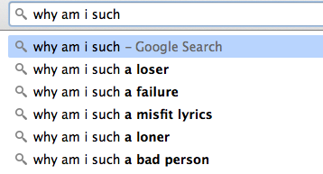

Date: September 19, 2014
 |
 |
 |
What's the biggest issue facing the tech industry? It's filled with people.

The search suggestions here tell a story.
Think how many times non-programmers must have googled 'WTF is wrong with the programmers' to fill all 3 of the top slots. Then realize, that most of these people followed-up, asking 'why the hell are those people get paid so much' (...more than me. With the implication that no asshole should make that much money).
The one line we might assume is actually from programmers is second from the last, 'why no overtime?' because these same 'weirdo' programmers are on a 12-hour day burnout cycle, questioning why things are so damned unfair.
Here's the trick, it's not a programmer issue, it's a people issue. Look what pops up at the bottom of the page:
Terrible, right? So what is wrong with people? And what is wrong with the people googling this shit? Oh, I don't know - choose one:
Doesn't matter. Whatever you'd choose is not the real answer anyway. The only thing wrong with other people is you. Yeah, seriously.
Maybe that programmer dude was rude to you because he's having a bad day. Or maybe he just thinks your an asshole. Or stuck-up. Or stupid. Doesn't matter. You can't control what anyone else thinks. Don't even bother youself with it - other people's thoughts of you are none of your business anyway. The only thing you can control is you, your thoughts, and actions.
So someone was a jerk to you. Maybe it bothererd you so much that you googled [group of people] + [certain behavior]. Why is this eating you? Do you need everyone to like you? Do you feel immediate rage if someone is disrespectful?
This is the secret of the universe: sort out the "you" issues and the "them" issues clear right up.
It's no wonder people are total donkeys - look at all the shit going on inside their heads (not to mention that song from Rudolph is cringe-worthy. Who are these maniacs that wanted the lyrics?):
The solution a.k.a. a 30 second primer on every self-help book: Define your boundaries. Assume the best about other people or at least assume they don't know any better. Cut people some slack. Share. Be polite. Figure out how to be direct when someone crosses a line or if you're unhappy. Listen really well. This helps people listen to you when you need them to. Are you the burnt out programmer from above working 12 hour days under the crushing weight of deliverables set by some higher-up who fundamentally has no idea what's possible? What's a reasonable boundary that will keep your sanity in check? Have a direct conversation and if things don't change, get the hell out of there. Don't exchange your health for a paycheck. Take care of yourself. Take care of others. Don't be a jerk. And please, use google for good.